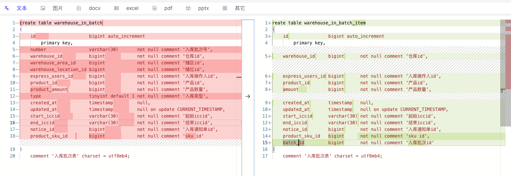

iccid中间数字为什么是20减去iccid相同部分的长度
/**
* @Description: 获取iccid中间数字长度
* @param startIccid 起始iccid
* @param endIccid 结束iccid
* @return int 中间数字长度
*/
func GetNumberLength(startIccid, endIccid string) int {
sl := len(startIccid) // iccid长度
//校验是否为19-20位
if !CheckIccidLenght(startIccid, endIccid) {
return 0
}
for i := 0; i < sl; i++ {
if startIccid[i] != endIccid[i] {
return 20 - i
}
}
return 0
}
|
iccid为什么分割为前缀、中间数字、校验位
89861501112510035000
89861501112510039999
/**
* @Description: 分割iccid
* @param iccid iccid
* @param length 数字长度
* @return string 前缀
* @return int 中间数字
* @return string 校验位
*/
func SplitICCID(iccid string, length int) (string, int, string) {
l := len(iccid) // iccid长度
cl := l - 20 // 校验位长度
return iccid[:l-length-cl], StringToInt(iccid[l-length-cl : l-cl]), iccid[l-cl:]
}
|
warehouse_in_batch与 warehouse_in_batch_item区别

batch与batch为一对多关系，一次入库可能分为多个批次，具体iccid卡插入到warehouse_in_item表
调拨入库与常规入库区别
个人理解：调拨入库为从仓库中已经有的号卡转入当前仓库；常规入库为将仓库中不存在的号卡转入当前仓库
/gd/cbn** 为广电运营商回调？
广电下单消费流程
PlanGdOrders（广电订单表：检查是否重复操作）-》PlanOrder（我们的订单表：插入）-》PlanGdOrders（广电订单表：插入）-》PlanOrderSecret（收货信息：插入）-》OperatorOrder（运营商订单表：插入）-》风控-》CainiaoCreateOrder（订单加入到菜鸟队列）-》GuangdianOrders（广电订单表：状态修改）
|
菜鸟下单消费流程

{kind=link}